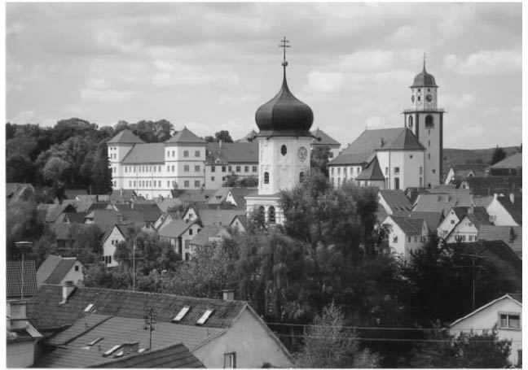

他是（有可能除了维特根斯坦之外）20世纪最伟大的哲学家。他是（有可能除了黑格尔之外）最名不副实获得“哲学家”称号的人，因为他是把空洞的措辞伪装成深邃言语的大师。他又是一个不可救药的德国乡巴佬，还一度是一个轻信别人又妄自尊大的纳粹分子。他对纳粹进行过严厉的批评，虽然这在当时不可避免地需要遮遮掩掩。他对我们这个时代的痼疾以及我们殷殷期待的疗治这些痼疾的药方进行过鞭辟入里的分析。这些论断中的每一个都是海德格尔的一个侧面，都有或多或少的根据。能引发这样一些对立反应的人究竟是一个什么样的人呢？
马丁·海德格尔1889年9月26日出生于德国西南部巴登州梅斯基希小镇一个贫穷的天主教家庭。父亲弗里德里希帮人看酒窖，还为当地教堂做司事。1903年，马丁在一笔奖学金的资助下去了康斯坦兹读中学，住在一家天主教堂办的寄宿宿舍里。当时这样做就是为了准备以后当牧师。1906年他转到弗莱堡的一所中学就读，教会为他免费提供食宿。据他自己讲，他就是在这里读了现象学运动先驱之一弗朗茨·布伦塔诺的《论亚里士多德学说中“存在”的多重含义》（1862），引发了他对哲学的兴趣。后来他还读到了卡尔·布莱格的《论存在：本体论论纲》（1896），这本著作中摘录了大量亚里士多德和中世纪其他哲学家如阿奎那等人的著述（“我的现象学之路”，74）。1909年海德格尔从中学毕业，成为一名见习耶稣会会士，但工作不到一个月便因心脏病，另外或许还有缺少职业精神的原因而被辞退。随后海德格尔进入弗莱堡大学学习神学和经院哲学。1911年发生在海德格尔身上的一场危机使得他不再把神职当做自己的主要志向，而是转向了哲学、伦理学和自然科学的研究。就在这期间，他开始研究现代哲学，尤其是埃德蒙·胡塞尔的《逻辑研究》。胡塞尔是现象学运动的主帅，他致力于系统研究人类有意识的精神过程，而不考虑这些过程非精神的原因和结果。海德格尔1913年以题为《心理主义的判断学说》的博士论文完成学业。在博士论文中，他运用胡塞尔的观点，批判了从人类心理学角度对判断的逻辑观念进行的尝试性分析。1915年海德格尔的任教资格论文《邓·司各特的范畴和意义学说》使他获得弗莱堡大学的教职。
海德格尔的学术生涯被第一次世界大战打断了。1915年他应征入伍，但被认定不适合打仗，于是被分配到邮政和气象部门。1917年他与新教教徒埃尔弗里德·彼得里结婚，婚后不久就有了儿子约格。1919年1月，他宣布与“天主教教义体系”决裂。1918年从军队退役之后，他担任了弗莱堡大学无俸讲师和胡塞尔的助教，胡塞尔于1916年当上了这所大学的教授。海德格尔令人眩目的智慧和洞见使他声名鹊起。他关于亚里士多德、圣保罗、圣奥古斯丁、现象学、日常经验世界和人类的演讲，为他赢得了哲学界“无冕之王”（阿伦特语）的美誉。1923年他搬到了马尔堡大学做副教授，在这里他与神学家鲁道夫·布尔特曼成了朋友，并且与汉娜·阿伦特建立了持久的友谊。（他与卡尔·雅斯贝尔斯在1920年建立了友谊并保持通信。）在马尔堡大学他把讲座内容延伸到了亚里士多德的《修辞学》、柏拉图的《智者篇》、前苏格拉底时期的希腊哲学、时间、真理、阿奎那、康德、莱布尼茨。不过，这时他已有十年没出书了。1927年春天，他的伟大作品《存在与时间》出版了，发表在胡塞尔主编的《哲学与现象学研究年刊》上，同时以单行本形式发行。按海德格尔的说法，在这个时间出版该书，目的是为了满足政府所规定的马尔堡大学全职教授的聘任要求（“我的现象学之路”，80）。次年，他接替胡塞尔担任弗莱堡大学的教授。他在1929年所做的就职演讲的题目是“什么是形而上学？”。在接下来的那个冬天里他围绕这个题目作了更详实的论述（虽然，他的讲述方式很有特点，在讲授“形而上学的基本概念”时大部分时间都在讲明显属于题外话的关于无聊和昆虫的问题）。也是在这一年，他与恩斯特·卡西尔展开了一场关于康德哲学的公开辩论，还因此发表了《康德与形而上学问题》。他的讲座内容还包括唯心主义者谢林和黑格尔、柏拉图《理想国》中关于洞穴的比喻，以及前苏格拉底时期的哲学家阿那克西曼德和巴门尼德。1930年，他拒绝了柏林大学聘任他担任教授的邀请。海德格尔对德国南部的当地生活非常热爱，迷恋那里的小镇和粗犷的风景。他的大部分写作都是在他1923年建于托特瑙堡的一座山间小屋里完成的。他不喜欢大都市以及那里的社会文化生活。
1918年至1933年魏玛共和国时期的德国文化活动很活跃，但同时经济萧条、政治动荡。1930年9月，阿道夫·希特勒创办的民族社会主义德意志工人党（NSDAP，但一般称做“纳粹”）成为德国第二大党派。1933年1月30日，希特勒被任命为右翼联盟总理。之后，他以2月27日的国会纵火案为借口，仓促通过了授予纳粹党绝对权力的法令。1934年6月30日，他又以恩斯特·罗姆叛乱为借口，谋杀了其对手罗姆的冲锋队员和其他异己党员，例如反对资本主义甚于反对犹太人或布尔什维克主义的“左翼”纳粹党员格雷戈尔·斯特拉瑟尔。（约瑟夫·戈贝尔早期是斯特拉瑟尔的拥护者，但他1926年为希特勒所鼓动，参与到赢取银行家和实业家支持的活动中。）1934年8月2日，希特勒被宣布为“德意志帝国领袖”。20世纪20年代，海德格尔几乎不问政治，而到30年代初他逐渐开始同情纳粹主义。1933年4月21日他被弗莱堡大学教职工推选为校长，5月1日加入了纳粹党。5月27日他发表了题为“德国大学的自我主张”的就职演说，演说虽非特别温和，却并没有反犹内容，这一点令人注目（不过，他的确将劳动、服役和求知视为同等重要的学生义务）。海德格尔在担任校长期间与新政权合作，同时也力图缓和后者残忍的一面。他参与了1933年11月德国退出国际联盟的公民投票活动。1934年4月，他因与师生及党内官员发生龃龉而辞去校长一职。尽管没有退党，但他也并不积极投身政治了。后来，海德格尔宣称自从罗姆暴动之后，他对纳粹主义抱有的幻想便破灭了。

图1梅斯基希镇公所和市场广场
20世纪30年代海德格尔几乎没有发表作品，但他继续授课，尤其是讲授艺术。1935年，他在弗莱堡发表了题为“艺术作品的起源”的演讲。1936年海德格尔前往罗马，开始讲授关于荷尔德林的系列讲座的第一讲。荷尔德林是一位神秘哲学诗人，18世纪晚期曾是黑格尔在图宾根神学院的室友。在罗马，海德格尔见到了卡尔·洛维特，他曾经的一位犹太裔学生。洛维特称，海德格尔对纳粹仍然怀有忠诚（洛维特，59—61）。同一年，海德格尔开课讲授尼采。这一课程一直持续到20世纪40年代早期，后来成书并于1961年出版。海德格尔的朋友们认为这些讲座对纳粹主义有着隐晦的批判，他试图挽救尼采，不让尼采再被用来支持种族主义信条和行径。与此同时，海德格尔受到盖世太保的监视。从1938年开始，海德格尔的思想中技术的作用占有越来越重要的分量。他表现出这一兴趣是在他1938年于弗莱堡所作的题为“形而上学对现代世界图像的奠基”的演讲中，也出现在一场关于恩斯特·云格尔的“劳动者”一文专题讨论课的讲义中。（云格尔既不是纳粹分子，也不是反犹太分子，但是他的诸如“全面动员”这样一些观念被纳粹利用了。）海德格尔这一时期的讲座经常提及政治事件和当时的二战。他总是把它们同“存在的遗忘”以及技术联系起来。他认为，一厢情愿地想建立一个几千年长盛不衰的世界性帝国，这种只求长存不求实质的偏好与希腊人那样的真正“缔造者”相去甚远。一个帝国的建立主要不是依靠“独裁者”或“专制政体”，而是源自“现代性的形而上学实质”，一种凌驾于自然之上的意志（li.17及下页）。对纳粹主义的这一断言是在1941年夏天作出的，当时的希特勒政权正处于鼎盛时期。
1944年秋天，海德格尔（忍辱）被征召加入了国民军（即“人民风暴”，有些类似于“英国国家卫队”或“老爹军”），沿着莱茵河挖反坦克战壕。1945年初，他回到梅斯基希处理自己的手稿以确保它们安然无恙。6月，也就是德国纳粹政府最终垮台的两个月后，海德格尔去了弗莱堡，出现在“去除纳粹委员会”面前。法国占领军中的一些军官与海德格尔取得了联系，并为能使他和长期以来崇拜他的让-保罗·萨特见面作过多次安排。这一计划并没有实现。但他与萨特有书信来往，还和法国最忠实的海德格尔崇拜者让·波弗莱结下了友谊。1946年他被禁止上讲台，这项禁令一直持续到了1949年。不过，他可以保留自己的图书馆，并被大学授予了荣誉退休教授的名誉。这项决定获得了弗莱堡大学当局和法国政府的支持，这一支持部分是根据他的老朋友雅斯贝尔斯的一份报告作出的。
海德格尔的写作生涯和讲坛生涯又重新焕发了活力。他面对一小群听众作了“诗人何为？”（1946）的演讲，以此来纪念里尔克逝世二十周年。他还发表了写给波弗莱的信——“关于人道主义”（1947），在其中他将自己的哲学同法国存在主义拉开了距离。1949年12月，海德格尔为不来梅俱乐部作了四场演讲，其中题为“物”的一场是他1950年在巴伐利亚艺术学院所作的。他又恢复了和老朋友的交往：阿伦特于1950年来拜访他，他同阿伦特以及雅斯贝尔斯的书信来往也恢复了。1953年他再次到巴伐利亚艺术学院演讲，这次的题目是“技术问题”。他的游历范围比先前更广了。1955年他到瑟里西拉瑟勒发表了题为“什么是哲学？”的演讲，随后又在普罗旺斯地区的埃克斯市发表了“黑格尔与希腊人”（1957）的演讲，并在那里与勒内·夏尔成为了朋友。1959年在他七十岁生日那一天，梅斯基希授予他荣誉市民的称号。1962年他首次访问希腊，1967年又再次访问这里，并在雅典科学和艺术学院作了题为“艺术的起源和思想的使命”的演讲。从1966到1973年，他先后在法国普罗旺斯的勒托尔和德国的采林根区举办了一系列研讨班。在1966年接受德国《明镜》周刊采访时，他试图为自己在纳粹时期的行为作出解释。这次采访在他逝世后十年才以“只有一位神才能拯救我们”为题发表。这一标题是他在接受采访中引用的荷尔德林一首诗中的句子：“在我的少年时期/一位神常常拯救我/让我免受成年人的呵斥和棍棒。”
二战后，海德格尔不断地发表著作，其中很大部分都是他以前演讲的修订稿。他在生命最后的日子里协助编辑了自己的著作全集，包括他的演讲稿以及早先出版的著作。他公开表示，希望每次讲座中的思想都不会被遗漏。全集中的一卷于1975年出版，其中收入了他自1927年夏天开始在马尔堡所作的关于“现象学基本问题”的一系列讲座。（这一版本还不完整，原计划收入约一百卷。）海德格尔于1976年5月26日逝世，5月28日下葬于梅斯基希的一处墓园中，与他的父母为邻。人们举办了一场天主教弥撒来追思他。主持追思会的牧师是他的侄子海因里希·海德格尔，他引用了《耶利米书》第1章第7节：“耶和华对我说：‘你不要说‘我是年幼的’，因为我差遣你到谁那里去，你都要去；我吩咐你说什么话，你都要说。’”
海德格尔的一生是一个关于流浪者回归的迷人故事，但他的故事之所以比任何其他人的都有趣，是由于他身为思想家的缘故。正因为他是一位重要的哲学家，人们才会不放过他所从事的政治活动的细节，更不用说他的宗教信仰和私生活了。我们下面就来看看他的哲学思想。